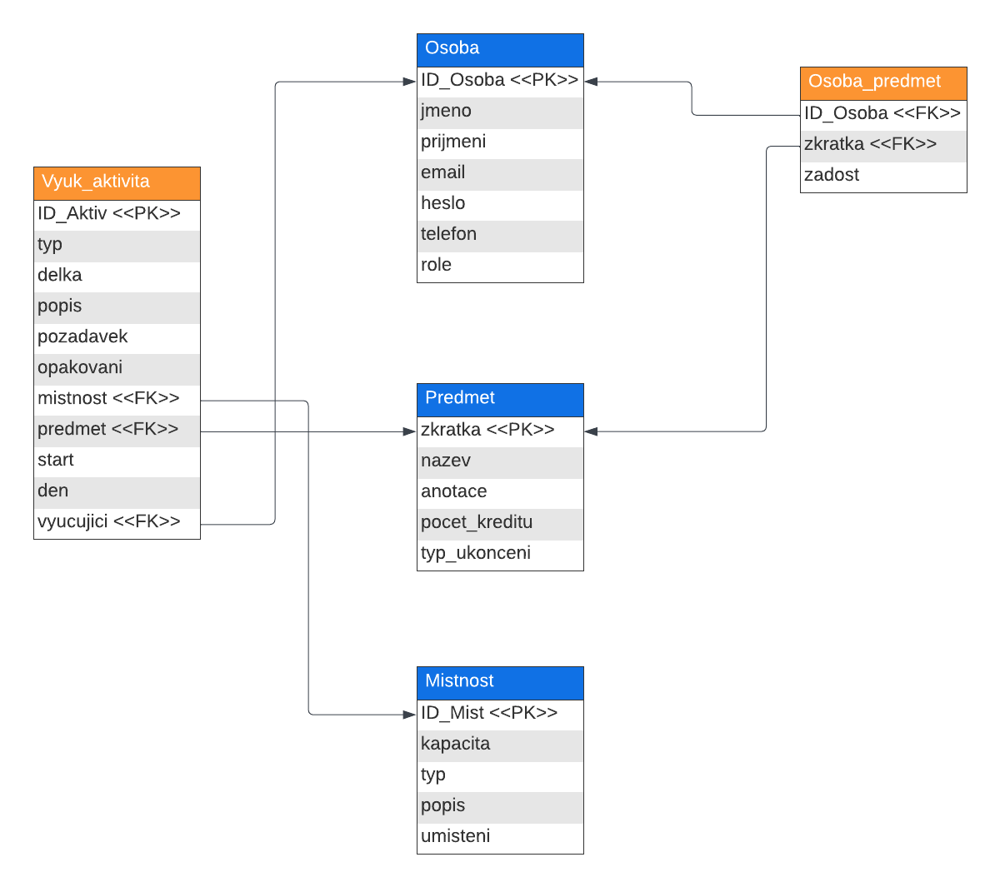

Uveïte prosím existující zástupce v¹ech rolí u¾ivatelù.
| Heslo | Role | |
|---|---|---|
| admin@admin.admin | admin | Administrátor |
| vyuc@vyuc.vyuc | vyucujici | Vyuèující (garant nìjakého pøedmìtu) |
| Vyuèující (negarantuje ¾ádný pøedmìt) | ||
| rozv@rozv.rozv | rozvrhar | Rozvrháø |
| stud@stud.stud | student | Student |
| - | - | Neregistrovaný u¾ivatel ("Vstoupit bez pøihlá¹ení" na login stránce) |
(Diagram pøípadù u¾ití není nutné vkládat, pokud IS implementuje role a pøípady u¾ití definované zadáním.)
Pøilo¾te odkaz na komentované video demostrující pou¾ití informaèního systému. Zamìøte se na pøípady u¾ití definované zadáním (napø. registrace u¾ivatele, správa u¾ivatelù a èinnosti jednotlivých rolí). Video nahrajte napøíklad na VUT Google Drive, kde ho bude mo¾né pøímo spustit z odkazu.
Struèná dokumentace k implementaci, která popisuje, které èásti projektu (napø. PHP skripty) implementují jednotlivé pøípady pou¾ití.
Databázi si je mo¾né prohlédnout v SQL kódu ve slo¾ce misc/database.sql. Souèástí kódu této databáze jsou pøíkazy pro vlo¾ení samplových dat.
Celý informaèní systém je otestován na serveru EVA (eva.fit.vutbr.cz). V praxi byl informaèní systém vyvíjen v Docker containerech (MySQL Server a Apache). Informaèní systém je tedy funkèní a otestovaný na následujícím softwaru.
Jako první je potøeba si zaøídit a nainstalovat webový a databázový server (jejich specifikace jsou vý¹e). Do koøenového adresáøe Va¹eho webového serveru je následnì potøeba umístit obsah archivu, odevzdaného týmem xmorku03. Pro ovìøení, ¾e jste jej umístili na správné místo si mù¾ete zobrazit ve Va¹em webovém prohlí¾eèi URL va¹eho webového serveru. Pokud se Vám zobrazí pøihla¹ovací stránka (bez jakékoliv stylizace), jsou zdrojové soubory umístìny správnì.
Nyní je je¹tì potøeba nastavit správnì cestu ke CSS stylovému souboru a k Javascipt skriptu pro kontrolu vyplnìnosti formuláøù. Pro její nastavení prosím bì¾te do souboru common.php do funkce make_header(). Zde je potøeba nastavit hodnotu promìnné $domain na URL va¹eho webového serveru místo aktuálního 'http://localhost:8080'. Je to z dùvodu, ¾e soubory je potøeba mít dostupné z mnoha kontextù informaèního systému a na serveru EVA, není koøenový adresáø webového serveru nastaven na adresáø studenta.
Po nastavení hodnoty promìnné je dobré si vyzkou¹et, zdali byla nastavená správnì. Pokud se Vám pøi otevøení URL webového serveru ve va¹em prohlí¾eèi nezobrazí pøihla¹ovací stránka, obsahující stylování, potom mù¾e být je¹tì chyba v cache va¹e prohlí¾eèe, který si va¹i stránku ulo¾il. Pokuste se vyèistit cache va¹eho prohlí¾eèe pro URL webového serveru a URL serveru znova otevøete.
Pokud se ani nyní nevykresluje stylizovaná pøihla¹ovací stránka, je chyba v nastavení promìnné $domain. Zkuste ji znovu nastavit a zopakovat pøedchozí postup. Pøi správném nastavení promìnné se styl naète.
Pokud jste si vyzkou¹eli pøihlá¹ení nebo jenom vstoupit bez pøihlá¹ení, v¹imli jste si, ¾e vás systém nepøihlásil nebo nevypsal anotace pøedmìtù. To je z dùvodu nenastaveného databázového serveru. Proto bude potøeba následující:
Nyní je potøeba si zjistit adresu databázového serveru, jméno u¾ivatele databázového serveru a heslo u¾ivatele databázového serveru.
Pokud máte v¹echny tyto údaje, otevøete si soubor db_conn_parameters.php ve slo¾ce misc. Zde doplòte va¹e zji¹tìné údaje do promìnných $connString, $userName, $password. Údaje doplòte tak aby:
Nyní je nastaveno PDO pøipojení k databázi a je potøeba pouze naplnit Va¹i databázi tabulkami a ukázkovými daty. Pro to doporuèujeme se pøipojit k va¹í databázi nìjakého nástroje. Námi testované nástroje jsou napøíklad JetBrains Datagrip, MySQL Workbench nebo webový klient (pokud jej máte nastavený) phpMyAdmin.
Nyní si okopírujte obsah souboru database.sql ze slo¾ky misc do va¹eho zvoleného klienta a skript spus»te. Pokud skript probìhl bez potí¾í, je v¹e zaøízeno a mù¾ete se pøihlásit a zaèít pou¾ívat informaèní systém.
Pokud se pøi spu¹tìní skriptu vyskytly komplikace, je mo¾né, ¾e u¾íváte nekompatibilní verzi MySQL nebo máte ¹patnì nastavený nástroj pro spou¹tìní skriptu. Ovìøte si správnost va¹eho nastavení a verzi SQL a opakujte postup.
Pokud skript probìhl bez potí¾í, ale nevidíte stále ¾ádná data a nemù¾ete se pøihlásit, je zøejmì ¹patné nastavení PDO pøipojení. Zkuste si ovìøit správnost Va¹ich zadaných dat a postup znovu opakujte.
Nyní by mìl být informaèní systém kompletnì funkèní.
Zde popi¹te, které body zadání nejsou implementovány a z jakého dùvodu. Napø. „Z èasových dùvodù nebyla implementována správa u¾ivatelù.” Pomù¾ete tím zrychlit hodnocení, kdy¾ neimplementované funkce nebudeme muset dlouze hledat.